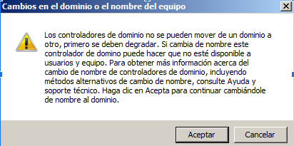

Configuracion:
Lo primero que encontramos al bootear en windows server 2008 es que se nos abre una ventana llamada “Tareas de configuración inicial”.
En esta ventana tenemos varias opciones con las que configurar nuestro sistema operativo.
Establecer zona horaria:
Tenemos un enlace azul llamado “Establecer zona horaria” le damos click y se nos abrirá una ventana con un reloj la hora y fecha ahí tenemos un botón que dice “Cambiar fecha y hora” ahí podremos ajustar la fecha y la hora a los valores deseados.
Configurar funciones de red:
Para la configuración de red vamos a asignar un dns fijo entonces, si seguimos los pasos de la captura al llegar al 4 en
el protocolo de iPv4 le damos click derecho y propiedades se nos abrirá una ventana de propiedades
iPv4 aquí podemos asignar el dns deseado en esta caso usaremos el DNS preferido “1.1.1.1” y el DNS alternativo “4.4.4.4”.
Así tendríamos nuestro dns preferido y de confianza listo y operativo.
Proporcionar nombre del equipo y dominio:
Si entramos en el enlace azul de “Proporcionar nombre del equipo y dominio” cuando le demos al boton de cambiar saldra el siguiente mensaje:
Aceptamos y continuamos en la pestaña emergente ahí podremos cambiar el nombre del equipo, le damos a aceptar cuando decidamos el nombre y listo.
